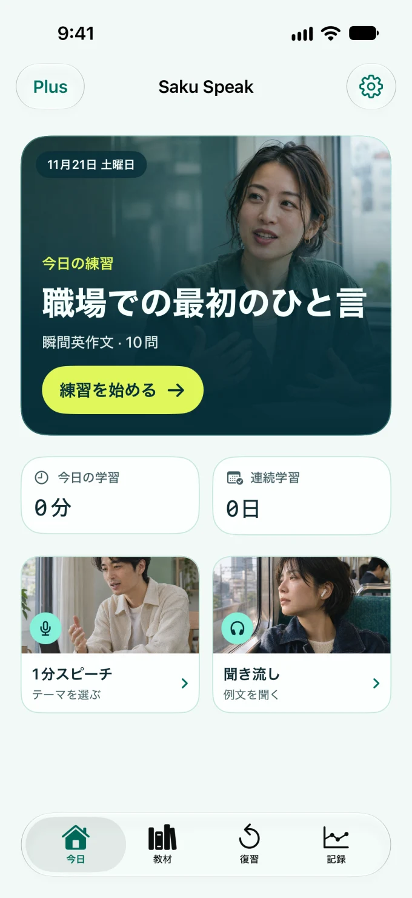

瞬間英作文
日本語を読んで、すぐに英語でひと言。場面や文法を選んで、使いたい表現を何度も練習できます。
8,000 例文
今日の会議は対面ですか？
Is today’s meeting in person?

iPhoneで英語スピーキング
海外の取引先に質問されると、答えは頭にあるのに英語が追いつかない。サクスピで、仕事に使うひと言を声に出す練習を。
会議で使う瞬間英作文
頭の中で英語にしてから、模範解答を開いてみましょう。
もう一度、画面を共有してもらえますか？
Could you share your screen again?
Could you で、相手に丁寧にお願いできます。
仕事で使う表現を起点に、日常や旅先で話す練習も。
日本語を読んで、すぐに英語でひと言。場面や文法を選んで、使いたい表現を何度も練習できます。
8,000 例文
今日の会議は対面ですか？
Is today’s meeting in person?

お題を一つ選び、自分の考えを1分間話す。添削で文法・表現・構成を振り返れます。
100 テーマ
16のビジネス場面から、次に使うひと言を選べます。海外出張と海外商談は、それぞれ350例文です。
| 分野 | 初級 | 中級 | 上級 |
|---|---|---|---|
| ビジネス | 2,240 | 2,240 | 1,120 |
| 日常会話 | 640 | 640 | 320 |
| 旅行 | 320 | 320 | 160 |
声を出せない場所では例文を聞き流し。迷った問題は復習に回し、学習記録で取り組んだ日を確認できます。
Apple Intelligence
話した英語の文字起こし、採点、添削を端末上で行います。
模範解答と違う言い方でも、日本語のお題の意味が伝わるかを確認します。
文法・表現・構成の指摘と、より自然な言い方の提案を見ながら振り返れます。
AI機能にはiOS 27以降と、Apple Intelligenceを有効にした対応iPhoneが必要です。
Saku Speak Plus
対象の方は初回7日間無料で、すべての教材とAI機能をお試しいただけます。
日本での提供予定価格
480 円／月
4,800 円／年
月払い10か月分
提供開始後はアプリから申し込めます。無料体験終了後は自動更新され、解約はiPhoneのサブスクリプション管理から行えます。
使い方や購入の復元は、サポートをご覧ください。
iOS 27以降のiPhone向けです。AIによる採点・添削を使うには、対応するiPhoneでApple Intelligenceを有効にしてください。
瞬間英作文は手入力でも練習できます。聞き流しでは、日本語と英語の例文を続けて再生できます。
文字起こしとAIによる添削はiPhone上で行います。スピーチ録音の再生・削除は学習記録から行えます。詳しくはプライバシーをご覧ください。
無料期間の終了後は、選択したプランに自動で移行します。プランの確認と解約はiPhoneのサブスクリプション管理から行えます。